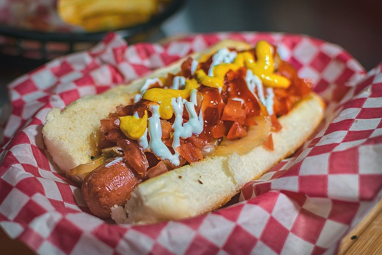

Home
Hot dog

Description
The American hot dog is an iconic sandwich made with a soft, elongated bun, usually grilled or lightly toasted, filled with a frankfurter or Vienna-style sausage that is either boiled or grilled. It is commonly topped with classic condiments such as mustard, ketchup, relish, raw or grilled onions, and sometimes sauerkraut or melted cheese, depending on regional variations.
Ingredients
- 1 hot dog buns
- 1 sausages of your choice (Frankfurt or Vienna)
- 1 tomato (diced)
- Caramelized or grilled onions
- American mustard
- White sauce – mayonnaise or sour cream.
- Red sauce – barbecue sauce or salsa.
Step
- Caramelize the onions: In a hot pan with a little butter or oil, sauté the chopped onion over medium heat until golden brown and tender (about 10 minutes). Season lightly with salt.
- Cook the sausages: Grill or boil the sausages according to your preference. (Grilled, they will have more flavor.).
- Prepare the toppings: Dice the tomato into small cubes. Prepare the sauces in small spoons or sauce bottles so they can be easily distributed.
- Heat the buns: Open the hot dog buns and toast them lightly (in a toaster, frying pan, or oven for a few minutes).
- Assemble the hot dogs: Place a hot sausage in each bun. Add the caramelized onions. Sprinkle with diced tomatoes. Add a drizzle of barbecue sauce, a dash of mayonnaise or sour cream, then mustard.